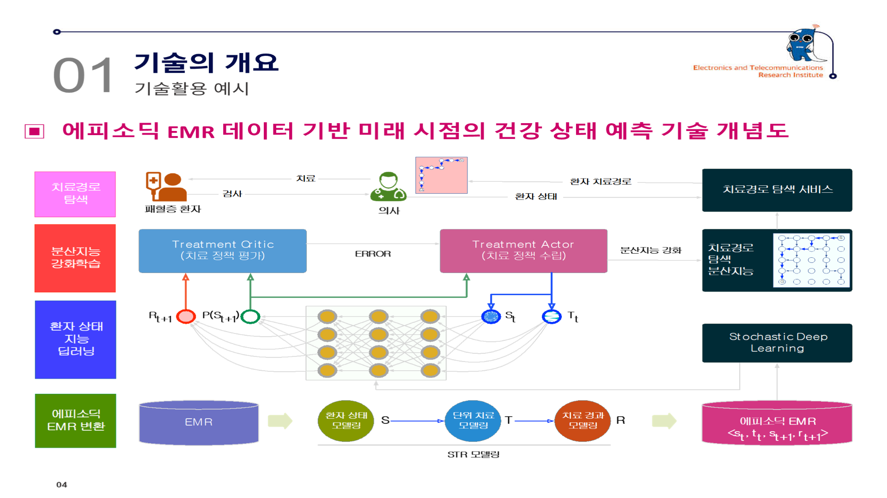

디지털 헬스케어확률 기반 예후 예측 ETRI Technology Marketing
미래 건강상태 및 예후 예측을 위한 헬스케어 인공지능 기술
치료 이후 발생 가능한 여러 미래상태를 확률과 함께 예측해 불확실한 임상 의사결정을 지원
기술 개요
- 치료에 따라 달라지는 환자 건강상태를 에피소딕 EMR 시계열로 구성
- 약물 내성·건강상태·질병 특성에 따른 비결정적 미래를 확률적으로 예측
- 복수의 미래 건강상태와 각 결과의 신뢰도를 함께 제공
기존 방식 대비 차별성
기존 기술
- 현재 진단 또는 단일 미래상태 판별
- 규칙적 시계열 데이터에 최적화
- 예측 불확실성 설명 부족
ETRI 기술
- 불규칙 치료 에피소드 반영
- 다중 미래상태 예측
- 확률적 신뢰도 제공
활용 분야 및 기대효과
적용 서비스
임상의사결정지원환자 예후관리중환자 모니터링개인건강관리
도입 효과
- 치료 선택에 따른 복수 예후 비교
- 불확실성을 포함한 위험도 판단 지원
- 환자별 예방·관리 서비스 정교화

핵심 이전기술
시계열 전처리이상치 처리와 치료 에피소드 변환
예후 예측미래 시점 건강상태 딥러닝 추론
확률 모델다중 미래상태와 신뢰도 계산
현장 적용패혈증 데이터와 병원 데이터 기반 검증
기술이전 정보
기술번호3610-2023-00011
연구조직ETRI 의료정보연구실
제공 범위전처리·예후예측·확률예측 SW와 설명서
예상 수요자병원, 의료데이터·AI 솔루션 기업